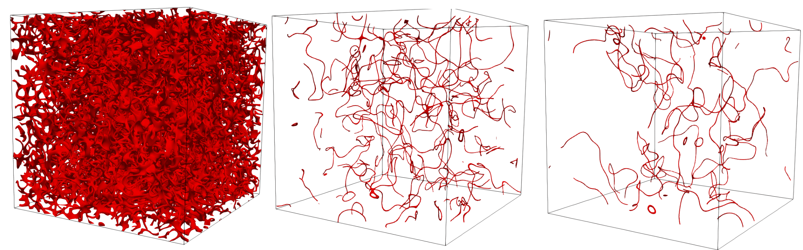

- Author
- Santo Maria Roccuzzo (santo.nosp@m.m.ro.nosp@m.ccuzz.nosp@m.o@gm.nosp@m.ail.c.nosp@m.om)
Far from equilibrium dynamics in a 3D dipolar Bose gas, using GPU acceleration.
Introduction
We want to study the far from equilibrium behavior of a 3D dipolar Bose gas. We use the mean field Gross-Pitaevskii equation for a dipolar system for our model
\[
\begin{equation}
i\hbar\frac{\partial }{\partial t}\Psi({\bf r},t) =
\left[-\frac{\hbar^2}{2m}\nabla^2+V_{\mathrm{ext}}({\bf r})+g|\Psi({\bf r},t)|^2+ \right.
\left. \frac{\mu_0\mu^2}{4\pi} \int d{\bf r}' U_{dd}({\bf r}-{\bf r}') |\Psi({\bf r}',t)|^2 \right] \Psi({\bf r},t)
\end{equation}
\]
Program description
The input file for this example will be called example-7.prm and contains the following text
# Mesh parameters
xmax = 120 # Size of the mesh along the x-axis, in micrometers. The mesh will extend from -xmax to xmax
ymax = 120 # Size of the mesh along the y-axis, in micrometers. The mesh will extend from -ymax to ymax
zmax = 120 # Size of the mesh along the y-axis, in micrometers. The mesh will extend from -ymax to ymax
nx = 512 # Number of points along the x-axis
ny = 512 # Number of points along the y-axis
nz = 512 # Number of points along the z-axis
# Physical parameters
scattering length = 150.0 # Scattering length in units of the Bohr radius
dipolar length = 132.0 # Dipolar length in units of the Bohr radius
number of particles = 400000000 # Total number of atoms
atomic mass = 164 # Atomic mass, in atomic mass units
theta = 0.0 # tilt angle in radiant
# Run parameters for gradient descent
number of gradient descent steps = 500 # maximum number of gradient descent steps
residual = 1.E-12 # Threshold on the norm of the residual
alpha = 1.E-4 # gradient descent step
beta = 0.9 # step for the heavy-ball acceleration method
# Run parameters for real-time dynamics
number of real time steps = 5000000 # Total number of time-steps for real time dynamics
time step = 0.001 # Time step for real-time dynamics, in milliseconds
write output every = 1000 # Write output every tot iterations
kcut = 1
At the beginning of the program, we define our solver class with customizable output
class Dipoles3d :
public cudaSolvers::DipolarGPSolver
{
public:
using DipolarGPSolver::DipolarGPSolver;
std::ostream& output_stream) override;
void set_healing_length(double healing_length){ internal_healing_length = healing_length; };
private:
double kc;
double internal_healing_length;
};
std::ostream &output_stream)
{
std::ofstream momentum_cuts;
momentum_cuts.open("nkx"+std::to_string(iteration_number/write_output_every)+".txt",std::ios::out);
for(
size_t ix = 0; ix <
int(nx/2); ++ix)
momentum_cuts << kx_axis(ix) << " "
<< integrated_occupation_number[0](ix)/(npoints)
<< std::endl;
momentum_cuts.close();
momentum_cuts.open("nky"+std::to_string(iteration_number/write_output_every)+".txt",std::ios::out);
for(
size_t iy = 0; iy <
int(ny/2); ++iy)
momentum_cuts << ky_axis(iy) << " "
<< integrated_occupation_number[1](iy)/npoints
<< std::endl;
momentum_cuts.close();
momentum_cuts.open("nkz"+std::to_string(iteration_number/write_output_every)+".txt",std::ios::out);
for(
size_t iz = 0; iz <
int(nz/2); ++iz)
momentum_cuts << kz_axis(iz) << " "
<< integrated_occupation_number[2](iz)/npoints
<< std::endl;
momentum_cuts.close();
double density_threshold = 0.01*(initial_norm_d[0]/(8*x_axis[nx-1]*y_axis[ny-1]*z_axis[nz-1]));
GraphicOutput::DataWriter quasi_condensate_out;
quasi_condensate_out.set_output_name("vortex_tangle"+std::to_string(iteration_number/write_output_every));
quasi_condensate_out.write_vtk(x_axis,y_axis,z_axis,vortex_tangle_density,"psi","BINARY");
}
Definition: example-7.cpp:36
void write_operator_splitting_output(size_t iteration_number, std::ostream &output_stream) override
Operator splitting output.
Definition: example-7.cpp:53
void calculate_vortex_tangle_length(double n_threshold)
Apply a density threshold on a wave function.
Definition: cudaDipolarGPSolver.cu:1073
void evaluate_integrated_occupation_number()
Evaluate integrated momentum distributions for a three-dimensional problem.
Definition: cudaDipolarGPSolver.cu:938
void apply_momentum_cutoff(double kc)
Apply a low-pass filter on the wave function.
Definition: cudaDipolarGPSolver.cu:1032
The overridden function for the real time output contains calls to different functions for data analysis on the GPU. The first one is
evaluate_integrated_occupation_number();
This function takes the current wave function stored in the GPU, calculates its Fourier transform, then calculates its modulus square (i.e., the momentum distribution) and finally integrates the momentum distribution along two axis. It also fills and returns to the host an std::vector, called integrated_occupation_numbers, containing three Vector<double>, each of which contains the momentum distribution integrated along the two other directions. So, integrated_occupation_number[0] corresponds to \(\tilde{n}(k_x) = \int dk_ydk_z |\tilde{\psi}(k_x,k_y,k_z)|^2\), integrated_occupation_number[1] corresponds to \(\tilde{n}(k_y) = \int dk_xdk_z |\tilde{\psi}(k_x,k_y,k_z)|^2\), and integrated_occupation_number[2] corresponds to \(\tilde{n}(k_z) = \int dk_x dk_y |\tilde{\psi}(k_x,k_y,k_z)|^2\). The apparently complicated working of this function is an (I think) acceptable price to pay in order to minimize the operations performed on the host, maximizing instead those performed on the GPU.
After writing the integrated occupation numbers into files, we come to the next function for data analysis on the GPU, namely
apply_momentum_cutoff(0.1);
This function takes the Fourier transform of the wave function previously calculated in evaluate_integrated_occupation_number() (this behavior should be changed, and the function apply_momentum_cutoff() should be made independent), cuts all momenta above the cutoff passed as an argument to the function (in this case, 0.1: the unit of length used in this program is the healing length, so a call to this function will cut all momenta above \( 0.1 \xi^{-1}\)), and then copies out a Vector<std::complex<double>> called wave_function_quasi_condensate accessible from the host, for example for creating a graphic output.
Finally, the last interesting function is
calculate_vortex_tangle_length(density_threshold);
Basically, what this function does is to find the position of the cores of the vortices in a vortex tangle by simply applying a threshold function on the quasi-condensate density (calculated with a call to apply_momentum_cutoff(0.1)), in this case choosing a threshold value of \(0.01 N/V\). This function also outputs the fraction of volume occupied by the vortex tangle (defined as the number of points of the mesh for which the quasi condensate density is smaller then the threshold value divided by the total number of points in the mesh) into a file called vortex_tangle_length.txt, and to pass to the host a Vector<double> called vortex_tangle_density with a format particularly suited for fast and lightweight output (basically, it contains a 1 for each point of the mesh for which the density is smaller then a threshold, and 0 otherwise. It is particularly useful to visualize only the position of the vortices in the vortex tangle, and works very well together with Paraview).
The main function of the program does nothing special, it just, as usual, reads the input, set the mesh and box initial conditions, add Truncated Wigner noise, and then run in real time, just like in the example-6 in 2D.
Results
We just show an example of the vortex tangle evolution, starting from "box" initial conditions in Fourier space, and letting the vortex tangle evolve and decay.

The plain program
#include "UltraCold.hpp"
#include <iomanip>
#include <cmath>
{
public:
using DipolarGPSolver::DipolarGPSolver;
std::ostream& output_stream) override;
void set_healing_length(double healing_length){ internal_healing_length = healing_length; };
private:
double kc;
double internal_healing_length;
};
std::ostream &output_stream)
{
std::ofstream momentum_cuts;
momentum_cuts.open("nkx"+std::to_string(iteration_number/write_output_every)+".txt",std::ios::out);
for(
size_t ix = 0; ix <
int(nx/2); ++ix)
momentum_cuts << kx_axis(ix) << " "
<< integrated_occupation_number[0](ix)/(npoints)
<< std::endl;
momentum_cuts.close();
momentum_cuts.open("nky"+std::to_string(iteration_number/write_output_every)+".txt",std::ios::out);
for(
size_t iy = 0; iy <
int(ny/2); ++iy)
momentum_cuts << ky_axis(iy) << " "
<< integrated_occupation_number[1](iy)/npoints
<< std::endl;
momentum_cuts.close();
momentum_cuts.open("nkz"+std::to_string(iteration_number/write_output_every)+".txt",std::ios::out);
for(
size_t iz = 0; iz <
int(nz/2); ++iz)
momentum_cuts << kz_axis(iz) << " "
<< integrated_occupation_number[2](iz)/npoints
<< std::endl;
momentum_cuts.close();
double density_threshold = 0.01*(initial_norm_d[0]/(8*x_axis[nx-1]*y_axis[ny-1]*z_axis[nz-1]));
quasi_condensate_out.
set_output_name(
"vortex_tangle"+std::to_string(iteration_number/write_output_every));
quasi_condensate_out.
write_vtk(x_axis,y_axis,z_axis,vortex_tangle_density,
"psi",
"BINARY");
}
int main() {
ip.read_input_file();
double xmax = ip.retrieve_double("xmax");
double ymax = ip.retrieve_double("ymax");
double zmax = ip.retrieve_double("zmax");
const int nx = ip.retrieve_int("nx");
const int ny = ip.retrieve_int("ny");
const int nz = ip.retrieve_int("ny");
double scattering_length = ip.retrieve_double("scattering length");
double dipolar_length = ip.retrieve_double("dipolar length");
const double number_of_particles = ip.retrieve_double("number of particles");
const double atomic_mass = ip.retrieve_double("atomic mass");
double theta = ip.retrieve_double("theta");
const int number_of_gradient_descent_steps = ip.retrieve_int("number of gradient descent steps");
const double alpha = ip.retrieve_double("alpha");
const double beta = ip.retrieve_double("beta");
const int number_of_real_time_steps = ip.retrieve_int("number of real time steps");
double time_step = ip.retrieve_double("time step");
const int write_output_every=ip.retrieve_int("write output every");
const double kcut = ip.retrieve_double("kcut");
const double hbar = 0.6347*1.E5;
const double bohr_radius = 5.292E-5;
double density = number_of_particles/(8*xmax*ymax*zmax);
double epsilon_dd = dipolar_length/scattering_length;
double chemical_potential = 4*PI*scattering_length*bohr_radius*density*(1-epsilon_dd);
double healing_length = 1.0/std::sqrt(chemical_potential);
std::cout << "Atomic density = " << density/100.0 << " 10^14 cm^{-3}" << std::endl;
std::cout << "Chemical potential = " << chemical_potential << std::endl;
std::cout << "Healing length = " << healing_length << " mum" << std::endl;
std::cout << "dx = " << 2.*xmax/nx << " mum" << std::endl;
std::cout << "kmax = " << nx/(4*xmax) << std::endl;
std::cout << "dk = " << 1./xmax << std::endl;
std::cout << "kxi dipo = " << 1./healing_length << std::endl;
std::cout << "kxi no dipo = " << 1./sqrt(1.-epsilon_dd)*1./healing_length << std::endl;
scattering_length *= bohr_radius/healing_length;
dipolar_length *= bohr_radius/healing_length;
xmax = xmax/healing_length;
ymax = ymax/healing_length;
zmax = zmax/healing_length;
double dx = 2.*xmax/nx;
double dy = 2.*ymax/ny;
double dz = 2.*zmax/nz;
for (size_t i = 0; i < nx; ++i) x(i) = -xmax + i*dx;
for (size_t i = 0; i < ny; ++i) y(i) = -ymax + i*dy;
for (size_t i = 0; i < nz; ++i) z(i) = -zmax + i*dz;
double dv = dx*dy*dz;
create_mesh_in_Fourier_space(x,y,z,kx,ky,kz);
std::default_random_engine generator;
std::complex<double> ci={0.0,1.0};
typedef std::chrono::high_resolution_clock clock;
clock::time_point beginning = clock::now();
clock::duration d = clock::now() - beginning;
generator.seed(d.count());
std::uniform_real_distribution<double> phase_distribution(0,TWOPI);
std::uniform_real_distribution<double> density_distribution(0,1);
for (size_t i = 0; i < nx; ++i)
for (size_t j = 0; j < ny; ++j)
for (size_t k = 0; k < nz; ++k)
{
double random_phase = phase_distribution(generator);
if (std::abs(kx(i)) <= kcut/TWOPI &&
std::abs(ky(j)) <= kcut/TWOPI &&
std::abs(kz(k)) <= kcut/TWOPI )
psitilde(i,j,k) = sqrt(density)*exp(-ci * random_phase);
}
dft.compute_backward();
double norm = 0.0;
for (size_t i = 0; i < psi.size(); ++i) norm += std::norm(psi[i]);
norm *= dv;
for (size_t i = 0; i < psi.size(); ++i) psi[i] *= std::sqrt(number_of_particles/norm);
Dipoles3d gp_solver(x,y,z,psi,Vext,scattering_length,dipolar_length,theta,0,
false);
gp_solver.set_healing_length(healing_length);
gp_solver.set_tw_initial_conditions(false);
gp_solver.run_operator_splitting(number_of_real_time_steps,time_step,std::cout,write_output_every);
return 0;
}
A class to output a data Vector in real space.
Definition: DataWriter.hpp:71
void set_output_name(const std::string &output_file_name)
Set the name for the output data file, input as an std::string.
Definition: DataWriter.cpp:31
void write_vtk(Vector< double > &x_axis, Vector< double > &y_axis, Vector< double > &real_output_vector, const char *vector_name, const char *format)
Write an output data file in .vtk format, for real 2D output.
Definition: DataWriter.cpp:805
Class to calculate Fourier transforms using Intel's MKL DFT functions.
Definition: DFtCalculator.hpp:60
GPU-accelerated solver for a dipolar Gross-Pitaevskii equation.
Definition: cudaDipolarGPSolver.cuh:43
All the classes and functions necessary to work with UltraCold.
Definition: BogolyubovSolver.cpp:25